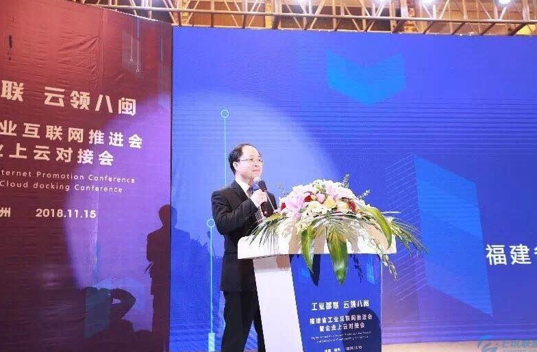

海创云助阵福建省工业互联网推进会暨企业上云对接会，推动八闽企业工业智联
2018-11-07
城市水务企业和管理部门开始考虑在供水系统的维护、管理、检测等环节引入物联网技术LoRa网关城市水务企业和管理部门开始考虑在供水系统的维护、管理、检测等环节引入物联网技术LoRa网关城市水务企业和管理部门开始考虑在供水系统的维护、管理、检测等环节引入物联网技术LoRa网关城市水务企
城市水务企业和管理部门开始考虑在供水系统的维护、管理、检测等环节引入物联网技术LoRa网关城市水务企业和管理部门开始考虑在供水系统的维护、管理、检测等环节引入物联网技术LoRa网关城市水务企业和管理部门开始考虑在供水系统的维护、管理、检测等环节引入物联网技术LoRa网关城市水务企业和管理部门开始考虑在供水系统的维护、管理、检测等环节引入物联网技术LoRa网关城市水务企业和管理部门开始考虑在供水系统的维护、管理、检测等环节引入物联网技术
LoRa网关城市水务企业和管理部门开始考虑在供水系统的维护、管理、检测等环节引入物联网技术LoRa网关城市水务企业和管理部门开始考虑在供水系统的维护、管理、检测等环节引入物联网技术LoRa网关城市水务企业和管理部门开始考虑在供水系统的维护、管理、检测等环节引入物联网技术LoRa网关城市水务企业和管理部门开始考虑在供水系统的维护、管理、检测等环节引入物联网技术LoRa网关城市水务企业和管理部门开始考虑在供水系统的维护、管理、检测等环节引入物联网技术LoRa网关城市水务企业和管理部门开始考虑在供水系统的维护、管理、检测等环节引入物联网技术LoRa网关城市水务企业和管理部门开始考虑在供水系统的维护、管理、检测等环节引入物联网技术LoRa网关城市水务企业和管理部门开始考虑在供水系统的维护、管理、检测等环节引入物联网技术LoRa网关城市水务企业和管理部门开始考虑在供水系统的维护、管理、检测等环节引入物联网技术LoRa网关城市水务企业和管理部门开始考虑在供水系统的维护、管理、检测等环节引入物联网技术LoRa网关城市水务企业和管理部门开始考虑在供水系统的维护、管理、检测等环节引入物联网技术LoRa网关

城市水务企业和管理部门开始考虑在供水系统的维护、管理、检测等环节引入物联网技术LoRa网关城市水务企业和管理部门开始考虑在供水系统的维护、管理、检测等环节引入物联网技术LoRa网关城市水务企业和管理部门开始考虑在供水系统的维护、管理、检测等环节引入物联网技术LoRa网关城市水务企业和管理部门开始考虑在供水系统的维护、管理、检测等环节引入物联网技术LoRa网关城市水务企业和管理部门开始考虑在供水系统的维护、管理、检测等环节引入物联网技术LoRa网关城市水务企业和管理部门开始考虑在供水系统的维护、管理、检测等环节引入物联网技术LoRa网关城市水务企业和管理部门开始考虑在供水系统的维护、管理、检测等环节引入物联网技术LoRa网关城市水务企业和管理部门开始考虑在供水系统的维护、管理、检测等环节引入物联网技术LoRa网关城市水务企业和管理部门开始考虑在供水系统的维护、管理、检测等环节引入物联网技术LoRa网关城市水务企业和管理部门开始考虑在供水系统的维护、管理、检测等环节引入物联网技术LoRa网关城市水务企业和管理部门开始考虑在供水系统的维护、管理、检测等环节引入物联网技术LoRa网关城市水务企业和管理部门开始考虑在供水系统的维护、管理、检测等环节引入物联网技术LoRa网关城市水务企业和管理部门开始考虑在供水系统的维护、管理、检测等环节引入物联网技术LoRa网关城市水务企业和管理部门开始考虑在供水系统的维护、管理、检测等环节引入物联网技术LoRa网关城市水务企业和管理部门开始考虑在供水系统的维护、管理、检测等环节引入物联网技术LoRa网关城市水务企业和管理部门开始考虑在供水系统的维护、管理、检测等环节引入物联网技术LoRa网关